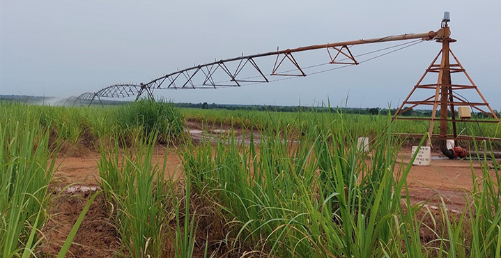

Les Champs de canne à sucre
DESCRIPTIONS DU SITE
Banfora c'est aussi la référence en terme de canne à sucre.Les champs de canne à sucre sont de grandes plantations agricoles destinées à la culture de la canne à sucre une plante tropicale riche en saccharose.
L'usinde de transformation SN-SOSUCO est à proximité du champ et fourni ainsi la meilleure qualité de sucre dans la sous région.C'est environ 5000 hectares qui sont cultivés par la SOCUCO.
HISTORIQUE DU SITE
C'est dans les années 1960-1970 que la canne à sucre est introduite dans la région des cascades.Dans le cadre de projets agro industriels pour améliorer l'auto suffisance alimentaire ce lieu emblématique a vite contribué à réduire le chômage.
L'usine quand à elle fut inaugurée en 1978.Elle continue à produire la quasi totalité du sucre burkinabè.